Information in this page is valid for spglib 1.8.1 or later. The definitions of transformation matrix and origin shift were different in the previous versions.
 or ¶
or ¶In spglib, basis vectors are represented by three column vectors:
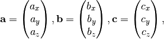
in Cartesian coordinates. Depending on the situation,
is used instead of
.
 ¶
¶Coordinates of an atomic point are represented
as three fractional values relative to basis vectors as follows,
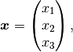
where  . A position vector
. A position vector  in
Cartesian coordinates is obtained by
in
Cartesian coordinates is obtained by
or

 ¶
¶A symmetry operation consists of a pair of the rotation part
 and translation part
and translation part  ,
and is represented as in the
spglib document. The symmetry operation transfers to
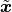 as follows:
,
and is represented as in the
spglib document. The symmetry operation transfers to
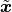 as follows:
 and origin shift
and origin shift  ¶
¶The transformation matrix changes choice of
basis vectors as follows

where  and
and  are the basis vectors of an arbitrary system
and of a starndardized system, respectively. Transformation matrix
doesn’t rotate a crystal in Cartesian coordinates, but just
changes the choices of basis vectors.
are the basis vectors of an arbitrary system
and of a starndardized system, respectively. Transformation matrix
doesn’t rotate a crystal in Cartesian coordinates, but just
changes the choices of basis vectors.
The origin shift gives the vector from the
origin of the standardized system  to
the origin of the arbitrary system ,
to
the origin of the arbitrary system ,

Origin shift doesn’t move a crystal in Cartesian coordinates, but just changes the origin to measure the coordinates of atomic points.
A change of basis is described by the combination of the
transformation matrix and the origin shift denoted by
 where first the
transformation matrix is applied and then origin shift. The points in
the standardized system
where first the
transformation matrix is applied and then origin shift. The points in
the standardized system  and
arbitrary system are related by
and
arbitrary system are related by
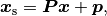
or equivalently,
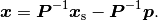
A graphical example is shown below.

(click the figure to enlarge)
In this example,
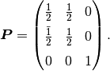
Using the APIs spg_get_dataset,
spg_get_dataset_with_hall_number, or spg_standardize_cell, the
starndardized unit cell is obtained. The “starndardized unit cell” in
this document means that the (conventional) unit cell structure is
standardized by the crystal symmetry and lengths of basis vectors.
Crystals are categorized by Hall symbols in 530 different types in
terms of 230 space group types, unique axes, settings, and cell
choices. Moreover in spglib, lengths of basis vectors are used to
choose the order of if
the order can not be determined only by the symmetrical conventions. The
details of these conventions are summarized in the article found at
http://arxiv.org/abs/1506.01455.
In the standardized unit cells, there are five different centring types available, base centrings of A and C, rhombohedral (R), body centred (I), and face centred (F). The transformation is applied to the standardized unit cell by
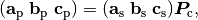
where  ,
,  ,
and
,
and  are the basis vectors of the
primitive cell and
are the basis vectors of the
primitive cell and  is the
transformation matrix from the standardized unit cell to the primitive
cell. for centring types are given
as follows:
is the
transformation matrix from the standardized unit cell to the primitive
cell. for centring types are given
as follows:
![\renewcommand*{\arraystretch}{1.4}
\boldsymbol{P}_\mathrm{A} =
\begin{pmatrix}
1 & 0 & 0 \\
0 & \frac{1}{2} & \frac{\bar{1}}{2} \\
0 & \frac{1}{2} & \frac{{1}}{2}
\end{pmatrix},
\renewcommand*{\arraystretch}{1.4}
\boldsymbol{P}_\mathrm{C} =
\begin{pmatrix}
\frac{1}{2} & \frac{{1}}{2} & 0 \\
\frac{\bar{1}}{2} & \frac{1}{2} & 0\\
0 & 0 & 1
\end{pmatrix},
\boldsymbol{P}_\mathrm{R} =
\begin{pmatrix}
\frac{2}{3} & \frac{\bar{1}}{3} & \frac{\bar{1}}{3} \\
\frac{1}{3} & \frac{{1}}{3} & \frac{\bar{2}}{3} \\
\frac{1}{3} & \frac{{1}}{3} & \frac{{1}}{3}
\end{pmatrix},
\boldsymbol{P}_\mathrm{I} =
\begin{pmatrix}
\frac{\bar{1}}{2} & \frac{{1}}{2} & \frac{{1}}{2} \\
\frac{{1}}{2} & \frac{\bar{1}}{2} & \frac{{1}}{2} \\
\frac{{1}}{2} & \frac{{1}}{2} & \frac{\bar{1}}{2}
\end{pmatrix},
\boldsymbol{P}_\mathrm{F} =
\begin{pmatrix}
0 & \frac{{1}}{2} & \frac{{1}}{2} \\
\frac{{1}}{2} & 0 & \frac{{1}}{2} \\
\frac{{1}}{2} & \frac{{1}}{2} & 0
\end{pmatrix}.](_images/math/34cbb5a66495951dca62c3d6fbeda6e5a40bc516.png)
For rhombohedral lattice systems with the choice of hexagonal axes,
 is applied.
is applied.
Spglib allows tolerance parameters to match a slightly distorted unit cell structure to a space group type with some higher symmetry. Using obtained symmetry operations, the distortion is removed to idealize the unit cell structure. The coordinates of atomic points are idealized using respective site-symmetries (Grosse-Kunstleve et al. (2002)). The basis vectors are idealized by forceing them into respective lattice shapes as follows. In this treatment, except for triclinic crystals, crystals can be rotated in Cartesian coordinates, which is the different type of transformation from that of the change-of-basis transformation explained above.
 is set along
is set along  direction of Cartesian coordinates.
direction of Cartesian coordinates. is set in
is set in  plane of Cartesian
coordinates so that
plane of Cartesian
coordinates so that  is along
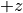 direction of Cartesian coordinates.
is along
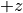 direction of Cartesian coordinates. axis is taken as the unique axis.
axis is taken as the unique axis. and
and 
 . is set along direction of Cartesian coordinates. is set along
. is set along direction of Cartesian coordinates. is set along  direction of Cartesian coordinates.
direction of Cartesian coordinates. is set in
is set in  plane of Cartesian coordinates.
plane of Cartesian coordinates. . is set along direction of Cartesian coordinates. is set along direction of Cartesian coordinates. is set along direction of Cartesian coordinates..
. is set along direction of Cartesian coordinates. is set along direction of Cartesian coordinates. is set along direction of Cartesian coordinates.. . is set along direction of Cartesian coordinates. is set along direction of Cartesian coordinates. is set along direction of Cartesian coordinates.
. is set along direction of Cartesian coordinates. is set along direction of Cartesian coordinates. is set along direction of Cartesian coordinates. ., , and
projected on plane in Cartesian coordinates be
., , and
projected on plane in Cartesian coordinates be
 ,
,  , and
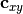, respectively, and their angles be
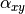, 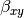,
, and
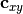, respectively, and their angles be
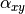, 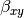,
 , respectively., , and
projected along
, respectively., , and
projected along  -axis in Cartesian coordinates be
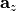, , and
-axis in Cartesian coordinates be
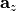, , and
 , respectively. is set along direction of Cartesian
coordinates, and and
are placed by angles 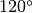 and 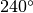 from
counter-clockwise, respectively.
, respectively. is set along direction of Cartesian
coordinates, and and
are placed by angles 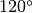 and 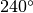 from
counter-clockwise, respectively. .
. .
. .. is set along direction of Cartesian coordinates. is set in plane of Cartesian coordinates. is set along direction of Cartesian coordinates... is set along direction of Cartesian coordinates. is set along direction of Cartesian coordinates. is set along direction of Cartesian coordinates.
.. is set along direction of Cartesian coordinates. is set in plane of Cartesian coordinates. is set along direction of Cartesian coordinates... is set along direction of Cartesian coordinates. is set along direction of Cartesian coordinates. is set along direction of Cartesian coordinates.